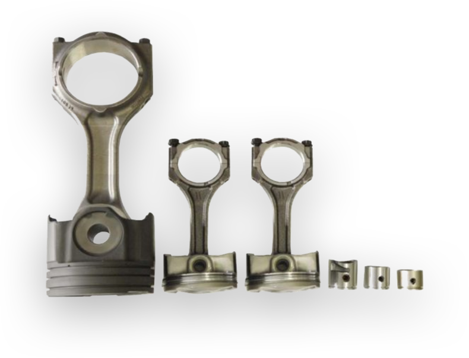
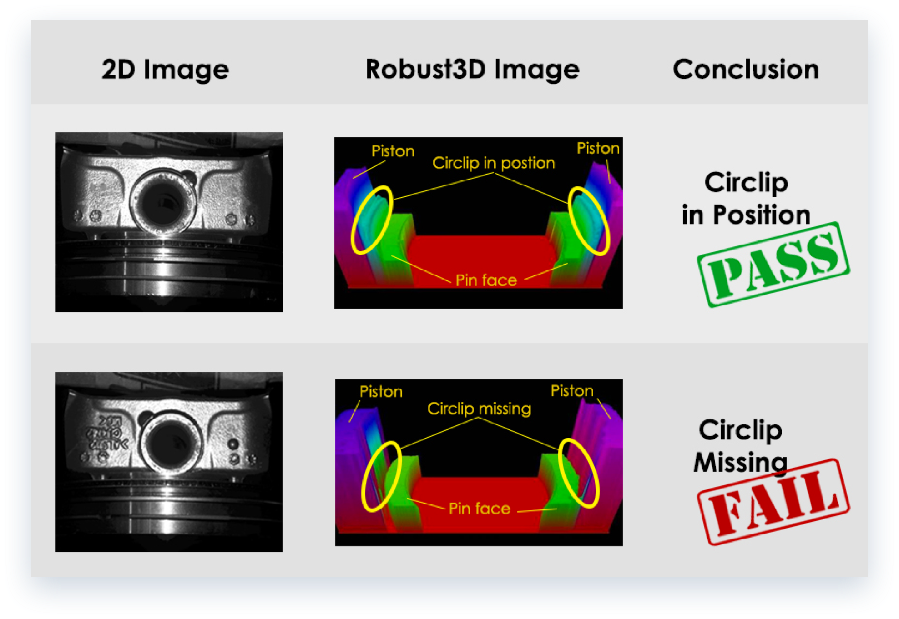

Piston Assembly


Robust3D Piston Assembly (PA) solution verifies the proper installation and
placement of circlips and rings in pistons to ensure assembly correctness in the manufacturing process.
The piston assembly process is prone to errors and cause downstream catastrophic engine failure if not caught.
Touch probes and temperamental 2D vision cameras are commonly use to error proof this assembly process. However,
the complex nature of piston assemblies and the dynamic work environment render these traditional technologies
unreliable. In addition, the root cause analysis of a failure requires 3D visualization of the defect. The Coherix
Robust3D Piston Assembly error proofing solution captures millions of data points to generate a 3D “as-built”
model of the assembly area. Robust3D PA is not impacted by changes in ambient lighting or part colors. It applies
sophisticated algorithms to reliably detect all failure modes with multiple levels of assurance unmatched by other
approaches.
.png) Download：Robust PA Spec Sheet
Download：Robust PA Spec Sheet

Typical Piston Assembly Failure Modes
Missing cir-clip
Pin-to-piston height
Double cir-clips
Cir-clip clocking wrong
Piston variant wrong
Pin variant wrong
Cir-clip mis-set/mis-seated
Piston land width
Piston orientation wrong
Missing piston ring
Utilizing Coherix i-Cite™ software, Robust3D PA provides hassle-free rapid
reconfigurability of reports, delivering actionable information to optimize the user experience. Over one year of
3D data can be archived for full 3D traceability, which enables upstream diagnosis of complex manufacturing issues
that helped one customer avoid an expensive recall.
